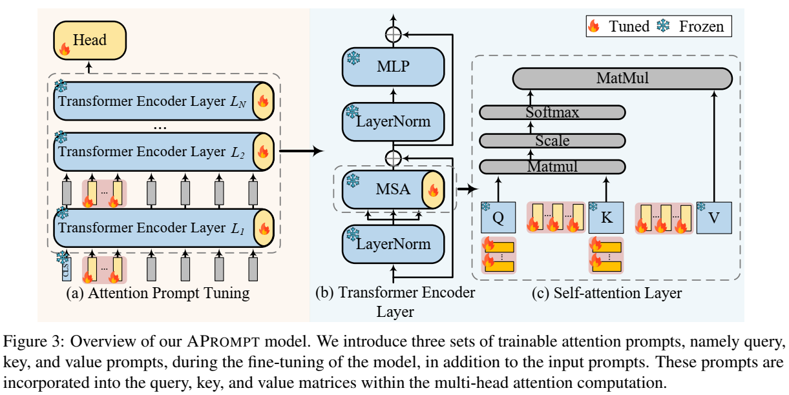

综述十一：大模型微调方法
大型语言模型微调方法详解（SFT、PT、RM、PPO、DPO 和 KTO）
以下是对几种关键的大型语言模型（LLM）微调方法的比较，包括重要的“RM”（奖励模型）。
1. SFT（监督式微调）
- 核心思想： 经典的监督学习。使用输入-输出对（提示和期望的回复）的数据集训练 LLM。
- 数据： 带有清晰的示例，说明模型应该如何回应的标记数据。
- 过程： 调整 LLM 的权重，以最大限度地减少其预测与数据集中正确答案之间的差异。
- 优点： 易于实现，通常提供强大的基线性能。
- 缺点： 需要高质量的标记数据，在捕捉细微的人类偏好或复杂的任务方面可能效果较差。
2. PT（提示微调）
- 核心思想： 不是大幅度改变 LLM 的权重，而是在输入中添加一小组“提示”参数。
- 数据： 类似于 SFT，使用输入-输出对。
- 过程： 只训练提示参数，引导 LLM 给出更好的回应，而不改变其核心知识。
- 优点： 非常节省参数，适用于资源有限的情况。
- 缺点： 对于非常复杂的任务，可能无法达到与完全微调（SFT）相同的性能水平。
3. RM（奖励模型）
- 核心思想： 训练一个单独的模型来预测给定 LLM 输出的“奖励”分数，以衡量其好坏程度。
- 数据： 需要人类对 LLM 的不同输出进行排名或评分的数据。
- 过程： RM 学习将其分数与人类对质量、有用性等的判断对齐。
- 优点： 提供了一种自动评估 LLM 输出的方法，对于强化学习方法至关重要。
- 缺点： 需要自己的训练数据，如果人类反馈存在缺陷，可能会引入偏差。
4. PPO（近端策略优化）
- 核心思想： 使用强化学习，根据 RM 提供的奖励来微调 LLM。
- 数据： 依赖 RM 对 LLM 输出进行评分，隐含地使用了人类偏好。
- 过程： 迭代地生成输出，从 RM 获取分数，并更新 LLM 以最大化预期奖励，同时保持更新的稳定性。
- 优点： 通过直接优化所需的行为，可以达到非常高的性能。
- 缺点： 难以实现和调整，计算量大，对 RM 的质量敏感。
5. DPO（直接偏好优化）
- 核心思想： 一种比 PPO 更简单的新方法，避免了对显式奖励建模的需求。
- 数据： 需要成对比较 LLM 输出，其中人类已表明哪个更受欢迎。
- 过程： 直接优化 LLM，以增加生成首选输出而不是不太受欢迎的输出的可能性。
- 优点： 比 PPO 更稳定且更易于实现，通常可获得可比的结果。
- 缺点： 仍然需要人类偏好数据，对于非常复杂的奖励结构可能不如 PPO 灵活。
6. KTO（卡尼曼-特沃斯基优化）
- 核心思想： 将行为经济学（特别是前景理论）的见解纳入微调过程。
- 数据： 可以使用各种形式的数据，但侧重于捕捉人类的决策偏差。
- 过程： 修改训练目标，以考虑人类如何看待收益和损失，旨在使 LLM 的选择更像人类。
- 优点： 可能导致更符合人类行为的输出，尤其是在决策环境中。
- 缺点： 相对较新且探索较少，实际效益仍在研究中。
关键区别总结
- SFT 和 PT： 基于输入-输出示例的监督学习。PT 更节省参数。
- RM： 一个单独的模型，根据人类偏好对 LLM 输出进行评分。
- PPO： 使用 RM 指导 LLM 训练的强化学习。
- DPO： 直接针对输出之间的人类偏好进行优化，无需显式 RM。
- KTO： 侧重于使 LLM 行为与人类决策偏差保持一致。
实际应用
通常会将这些方法结合使用。例如，LLM 最初可以使用 SFT 进行训练以获得良好的基础性能，然后使用人类反馈通过 PPO 或 DPO 进一步改进。选择取决于具体目标、可用数据和资源。
分类
加性微调（Additive FT）> 基于适配器的微调（Adapter-based FT） > 适配器设计 （Adapter Design）
Serial Adapter: Parameter-Efficient Transfer Learning for NLP (19/06)
论文地址
核心思想： 微调大型预训练模型是NLP中一种有效的迁移机制。然而，在存在许多下游任务的情况下，微调是参数效率低下的：每个任务都需要一个全新的模型。作为替代方案，我们建议使用适配器模块（adapter modules）进行迁移。适配器模块产生了一个紧凑且可扩展的模型；它们只为每个任务添加少量可训练的参数，并且可以添加新任务而无需重新访问以前的任务。原始网络的参数保持不变，实现了高度的参数共享。为了证明适配器的有效性，我们将最近提出的BERT-Transformer模型迁移到26个不同的文本分类任务中，包括GLUE基准测试。适配器达到了接近最先进的性能，同时每个任务只添加了少量参数。在GLUE上，我们达到了完全微调性能的0.4%以内，每个任务只添加了3.6%的参数。相比之下，微调训练每个任务100%的参数。
加性微调（Additive FT）> 基于软提示的微调 (Soft Prompt-based FT) > 软提示微调 (Soft Prompt Design)
Prefix-Tuning: Optimizing Continuous Prompts for Generation (21/01)
论文地址
核心思想：微调是利用大型预训练语言模型执行下游任务的事实上的方法。然而，它修改了所有语言模型参数，因此需要为每个任务存储一个完整副本。在本文中，我们提出了前缀调优，这是一种轻量级的自然语言生成任务微调替代方案，它保持语言模型参数不变，但优化了一个小的连续任务特定向量（称为前缀）。前缀调优从提示中汲取灵感，允许后续标记关注此前缀，就像它是“虚拟标记”一样。我们将前缀调优应用于GPT-2以生成表到文本，并应用于BART以进行摘要。我们发现，通过只学习0.1%的参数，前缀调优在完整数据设置中获得了相当的性能，在低数据设置中表现优于微调，并且可以更好地推断出在训练过程中看不到主题的示例。
Prefix Propagation: Parameter-Efficient Tuning for Long Sequences (23/05)
论文地址
核心思想：参数高效调优旨在减轻为下游任务调整预训练语言模型的大内存需求。例如，一种流行的方法，前缀调优，在冻结模型其余参数的同时，为序列添加可训练的标记。尽管这些模型在应用于短到中等长度的序列时，通过微调可以获得相当的性能，但在建模长序列时，我们发现它们的性能较差。为了弥合这一差距，我们提出了前缀传播，这是一种简单但有效的方法，可以根据之前的隐藏状态来调整前缀。我们实证证明，在长文档任务中，前缀传播的性能优于前缀调优，同时使用的参数减少了约50%。为了进一步研究所提出的架构，我们还展示了它在校准方面的优势，并对它与内核注意力的关系进行了进一步的研究。据我们所知，这项工作是第一个专注于长序列语言任务的参数高效学习的工作。
P-Tuning v2: Prompt Tuning Can Be Comparable to Fine-tuning Universally Across Scales and Tasks
论文地址
核心思想：提示调优仅使用冻结的语言模型对连续提示进行调优，大大减少了训练时的每任务存储和内存使用。然而，在NLU的背景下，先前的工作表明，对于正常大小的预训练模型，快速调优的效果并不好。我们还发现，现有的提示调优方法无法处理硬序列标记任务，表明缺乏通用性。我们提出了一个新的实证发现，适当优化的提示调优可以在广泛的模型尺度和NLU任务中普遍有效。它与微调的性能相匹配，但只有0.1%-3%的参数可调。我们的方法P-Tuning v2是针对NLU优化和调整的深度提示调优的实现。鉴于P-Tuning v2的普遍性和简单性，我们认为它可以作为微调的替代品，并为未来的研究提供强有力的基线。
APT: Towards Adaptive Prefix Tuning for Parameter-Efficient Language Model Fine-tuning (23/05)
核心思想：在各种下游任务上使用整个参数对大型预训练语言模型进行微调是非常昂贵的。因此，参数高效微调引起了人们的关注，它只使用冻结的预训练模型优化了一些特定任务的参数。在这项工作中，我们专注于前缀调优，它只优化插入到Transformer层中的连续前缀向量（即伪令牌）。基于观察到学习到的语法和语义表示在不同层上差异很大，我们认为自适应前缀将比固定前缀更适合每一层，从而使微调更加有效和高效。因此，我们提出了自适应前缀调整（APT），通过门机制在细粒度令牌级别和粗粒度层级别调整前缀。在SuperGLUE和NER数据集上的实验表明了APT的有效性。此外，以门为探测对象，我们验证了可变前缀的效率和有效性。
p-tuning: GPT Understands, Too (21/03)
论文地址
核心思想：事实证明，用自然语言模式构建预训练语言模型对自然语言理解（NLU）是有效的。然而，我们的初步研究表明，手动离散提示通常会导致性能不稳定，例如，更改提示中的单个单词可能会导致性能大幅下降。我们提出了一种新的P-Tuning方法，该方法采用可训练的连续提示嵌入与离散提示相结合。根据经验，P-Tuning不仅通过最小化各种离散提示之间的差距来稳定训练，而且在包括LAMA和SuperGLUE在内的各种NLU任务上也大大提高了性能。P-Tuning通常在完全监督和少样本设置下对冻结和调优的语言模型都有效。
prompt-tuning: The Power of Scale for Parameter-Efficient Prompt Tuning (21/04)
论文地址
核心思想：在这项工作中，我们探索了“提示调优”，这是一种简单而有效的机制，用于学习“软提示”来调节冻结的语言模型，以执行特定的下游任务。与GPT-3使用的离散文本提示不同，软提示是通过反向传播学习的，可以调整为包含来自任何数量的标记示例的信号。我们的端到端学习方法大大优于GPT-3的少样本学习。更值得注意的是，通过使用T5对模型尺寸进行消融，我们发现快速调整与规模更具竞争力：随着模型超过数十亿个参数，我们的方法“缩小了差距”，并与模型调整的强大性能相匹配（所有模型权重都经过调整）。这一发现尤其重要，因为大型模型的共享和服务成本很高，而为多个下游任务重用一个冻结模型的能力可以减轻这一负担。我们的方法可以看作是最近提出的“前缀调优”的简化，我们将其与其他类似方法进行了比较。最后，我们表明，用软提示调节冻结模型可以增强对域转移的鲁棒性，并实现高效的“提示集成”。
XPrompt: Exploring the Extreme of Prompt Tuning (22/10)
论文地址
核心思想：提示调优学习软提示，以调节冻结的预训练语言模型（PLM），从而以参数高效的方式执行下游任务。虽然随着模型规模的增加，快速调优已逐渐达到微调的性能水平，但对于中小规模的模型（通常小于11B参数），快速调优和微调之间仍存在较大的性能差距。在本文中，我们实证表明，训练好的提示标记会对下游任务产生负面影响，从而降低其性能。为了弥合这一差距，我们提出了一种在彩票假设下具有极小尺度的PROMPT调谐模型（XPROMPT）。具体来说，XPROMPT通过分层结构化修剪消除了不同粒度级别的负提示令牌，从而产生了一个更具参数效率但具有竞争力的提示。对SuperGLUE任务进行了全面的实验，广泛的结果表明，XPROMPT能够在较小的模型尺度上缩小性能差距。
IDPG: An Instance-Dependent Prompt Generation Method (22/04)
论文地址
核心思想：提示调优是一种新的、高效的NLP迁移学习范式，它在模型训练阶段的每个输入实例中添加了一个特定于任务的提示。它冻结了预训练的语言模型，只优化了一些特定于任务的提示。在本文中，我们提出了一种条件提示生成方法，为每个输入实例生成提示，称为实例依赖提示生成（IDPG）。与使用固定提示的传统提示调优方法不同，IDPG引入了一个轻量级且可训练的组件，可以根据每个输入句子生成提示。对10个自然语言理解（NLU）任务的广泛实验表明，所提出的策略始终优于各种提示调整基线，并且与Compacter等其他有效的迁移学习方法相当，同时调整的模型参数要少得多。
Late Prompt Tuning: A Late Prompt Could Be Better Than Many Prompts (22/10)
论文地址
核心思想：提示调优是一种参数高效调优（PETuning）方法，用于利用预训练模型（PTM），该方法只需在输入前添加软提示，并仅优化提示以使PTM适应下游任务。尽管它具有参数和部署效率，但其性能仍然落后于其他最先进的PETuning方法。此外，由于整个模型的反向传播，快速调整的训练成本并没有显著降低。通过实证分析，我们揭示了提示调谐的滞后性能，并认识到从标签信号到插入提示的传播距离与提示对模型输出的影响之间的权衡。此外，我们提出了延迟提示调优（LPT），它将延迟提示插入PTM的中间层，而不是输入层或所有层。后期提示是由神经提示生成器获得的，该生成器以提示插入层之前的隐藏状态为条件，因此具有实例依赖性。通过各种任务和PTM的广泛实验结果，我们表明LPT可以在全数据和少镜头场景下实现与全模型调优和其他PETuning方法竞争的性能，同时具有更快的训练速度和更低的内存成本。

SPT: Learning to Selectively Insert Prompts for Better Prompt Tuning (23/10)
论文地址
核心思想：提示调优在输入嵌入或隐藏状态之前添加一个软提示，并且只优化提示以使预训练模型（PTM）适应下游任务。之前的工作手动选择了远非最佳的提示层，并且未能利用提示调优的潜力。在这项工作中，我们提出了一种新的框架，选择性提示调优（SPT），它通过在每个中间层插入由可学习的概率门控制的提示来学习选择适当的提示层。我们进一步提出了一种新的双层优化框架SPT-DARS，可以更好地优化可学习门，并提高学习提示层设置的最终提示调优性能。我们在全数据和少镜头场景下对十个基准数据集进行了广泛的实验。结果表明，我们的SPT框架在可调参数相当或更少的情况下，可以比以前最先进的PETuning基线表现更好。
APrompt: Attention Prompt Tuning for Efficient Adaptation of Pre-trained Language Models (23/10)
论文地址
核心思想：随着大型语言模型的不断增长，为新任务微调这些模型的过程变得越来越参数密集。提示调优是一种涉及调优一小部分软提示的方法，已成为适应大型预训练语言模型的有效方法。然而，大多数现有的提示调优方法只在输入层引入提示，限制了它们的性能，并留下了很大的改进空间。在这项工作中，我们提出了一种新的注意力提示调优方法，即APROMPT，用于有效地适应预训练的语言模型。我们首先证明，现有的提示调优可以被视为注意力提示调优的一个特例。然后，我们正式引入APROMPT，它将查询、键和值提示整合到注意力层中，以在微调过程中指导注意力计算。SuperGLUE基准测试的实验结果一致表明，我们提出的方法在不同尺度下优于最先进的基线和预训练模型的完全微调方法。此外，一系列全面的消融研究验证了快速设计的有效性以及我们方法的效率。

加性微调（Additive FT）> 基于软提示的微调 (Soft Prompt-based FT) > 训练假设 (Trainng Speedup)
SPoT: Better Frozen Model Adaptation through Soft Prompt Transfer (21/10)
论文地址
核心思想：人们对将预训练的语言模型应用于下游任务的参数高效方法越来越感兴趣。基于Lester等人（2021）的PROMPTTUNING方法，该方法学习特定于任务的软提示，以调节冻结的预训练模型执行不同的任务，我们提出了一种新的基于提示的迁移学习方法，称为SPOT:软提示迁移。SPOT首先学习一个或多个源任务上的提示，然后使用它来初始化目标任务的提示。我们发现，SPOT在许多任务中显著提高了PROMPTUNING的性能。更值得注意的是，在所有模型尺寸中，SPOT在SUPERGLUE基准测试中与标准MODELTUNING（对所有模型参数进行微调）相匹配或表现出色，同时使用的任务特定参数减少了27000倍。为了了解SPOT在哪里最有效，我们对160个组合中的26个NLP任务的任务可转移性进行了大规模研究，并证明许多任务可以通过快速转移相互受益。最后，我们提出了一种高效的检索方法，将任务提示解释为任务嵌入，以识别相似的任务，并预测新目标任务的最可转移的源任务。

选择性PEFT (Selective PEFT) > 非结构化掩码 (Unstructural Masking)
U-Diff Prunning: Parameter-Efficient Transfer Learning with Diff Pruning (20/12)
论文地址
核心思想：预训练网络的大尺寸使得它们难以在存储受限的环境中部署用于多个任务。Diff剪枝实现了参数高效的迁移学习，可以很好地适应新任务。该方法学习一个特定于任务的“diff”向量，该向量扩展了原始预训练参数。在训练过程中，使用L0范数惩罚的可微近似自适应地修剪这个差异（diff）向量，以鼓励稀疏性。随着任务数量的增加，差异修剪仍然是参数高效的，因为它只需要为每个任务存储一个小的差异向量。由于它不需要在训练期间访问所有任务，因此在任务以流形式甚至从不同提供商到达的设备部署设置中很有吸引力。Diff剪枝可以与GLUE基准上微调基线的性能相匹配，同时每项任务只修改预训练模型参数的0.5%，与流行的剪枝方法相比具有良好的扩展性。
在参数化微调 (Reparameterized FT) > 低秩分解 (Low-rank Decomposition)
Intrinsic SAID: Intrinsic Dimensionality Explains the Effectiveness of Language Model Fine-Tuning (20/12)
论文地址
核心思想：尽管预训练的语言模型可以进行微调，为非常广泛的语言理解任务产生最先进的结果，但这一过程的动态并没有得到很好的理解，特别是在低数据状态下。**为什么我们可以使用相对普通的梯度下降算法（例如，没有强正则化）来调整只有数百或数千个标记示例的数据集上具有数亿个参数的模型？**本文认为，通过内在维度的视角分析微调，为我们解释这一显著现象提供了经验和理论直觉。我们实证表明，常见的预训练模型具有非常低的内在维度；换句话说，存在一种低维重新参数化，它对微调的效果与全参数空间一样有效。例如，通过仅优化随机投影回全空间的200个可训练参数，我们可以调整RoBERTa模型，使其在MRPC上达到全参数性能水平的90%。此外，我们实证表明，预训练隐含地最小化了内在维度，也许令人惊讶的是，在固定数量的预训练更新后，较大的模型往往具有较低的内在维度，这至少部分解释了它们的极端有效性。最后，我们将内在维度与低维任务表示和基于压缩的泛化边界联系起来，以提供独立于全参数计数的内在维度泛化边界。
LoRA: Low-Rank Adaptation of Large Language Models (21/06)
论文地址
核心思想：自然语言处理的一个重要范式包括对一般领域数据的大规模预训练和对特定任务或领域的适应。随着我们对更大的模型进行预训练，重新训练所有模型参数的完全微调变得不那么可行。以GPT-3 175B为例，部署每个都有175B参数的微调模型的独立实例是非常昂贵的。我们提出了低秩自适应（LoRA），它冻结了预训练的模型权重，并将可训练的秩分解矩阵注入到Transformer架构的每一层，大大减少了下游任务的可训练参数数量。与Adam微调的GPT-3 175B相比，LoRA可以将可训练参数的数量减少10000倍，GPU内存需求减少3倍。LoRA在RoBERTa、DeBERTa、GPT-2和GPT-3上的模型质量方面与微调相当或更好，尽管其可训练参数较少，训练吞吐量较高，并且与适配器不同，没有额外的推理延迟。我们还对语言模型适应中的等级缺陷进行了实证研究，揭示了LoRA的有效性。我们发布了一个软件包，该软件包促进了LoRA与PyTorch模型的集成，并为RoBERTa、DeBERTa和GPT-2提供了我们的实现和模型检查点https://github.com/microsoft/LoRA 。
A Note on LoRA (24/04)
论文地址
核心思想：LoRA（低秩自适应）已成为高效适应大型语言模型（LLM）的首选方法，具有显著的简单性和有效性。本说明扩展了最初的LoRA论文，提供了最初未讨论的新观点，并为大规模部署LoRA提供了一系列见解。在不引入新实验的情况下，我们的目标是提高对LoRA的理解和应用。
PEFT设计
分析
提示微调
When do Prompting and Prefix-Tuning Work? A Theory of Capabilities and Limitations (23/10)
论文地址
核心思想：基于上下文的微调方法，包括提示（prompting）、上下文学习（in-context learning）、软提示（soft prompting，也称为提示调优（prompt tuning））和前缀调优（prefix-tunning），因其能够经常将完全微调的性能与一小部分参数相匹配而广受欢迎。尽管它们在实证上取得了成功，但对于这些技术如何影响模型的内部计算及其表现力的局限性，理论上几乎没有什么了解。我们发现，尽管连续嵌入空间比离散标记空间更具表现力，但即使具有相同数量的可学习参数，软提示和前缀调优的表现力也可能不如完全微调。具体来说，基于上下文的微调不能改变内容上的相对注意力模式，只能将注意力层的输出偏向固定方向。这表明，虽然提示、情境学习、软提示和预加等技术可以有效地引出预训练模型中存在的技能，但它们可能无法学习需要新注意力模式的新任务。